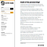

The next blogs


Past and personal blogs are the next things like this genre that I am writing now with this screenshot on the right I even don't distinguish the right from left I just pointed my mouse on the screenshot of this Seth’s blog article about the death of personal blogs for using the medium editing icon to get the answer but it doesn't provide it. I imagined myself turning and being in the place of my computer to figure it out. Like, explain professor Lakoff with the embodiment theory that makes us take the place of the thing we want to understand in order to see how they see and maybe how they think. We also appropriate things make them ours. we say my computer, my mouse, my pc, my laptop, my cdrom, my USB key, and now my smartphone but My computer is more likely to be from an early tech adopter, a geek, a nerd. Words tell who we are we know it. Personal blogs were made of words of real people who were saying who they were and about what they cared about and in what tribes they belonged leaving on the ground a graph network that shows clearly the present and the future. That’s why personal blogs tell the future and are by the way the next things that will emerge from the crowded online content of market-centric driven startup machine learning bot crypto IPO blogs.
Just forgotten to tell NFT by crypto IPO is enough to pin this idea I got and share it with you.
this embodiment theory has something to do with the Gandhi neuron this neuron that deals with empathy.
Executing the second form of screenshot story without even knowing that I am executing an idea that I describe here.